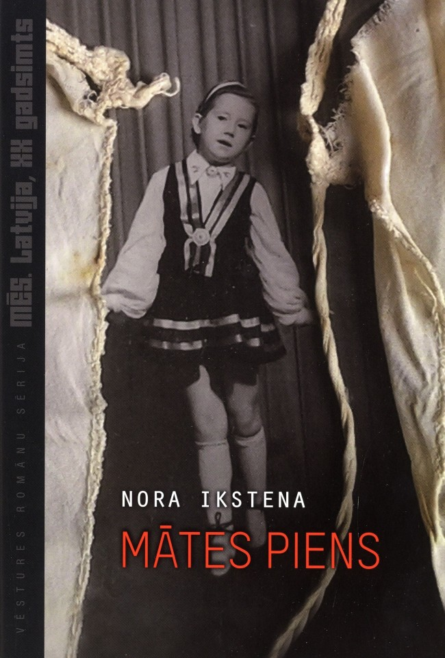

Mātes Piens
Noras Ikstenas romāns “Mātes piens” aptver laika posmu no Otrā pasaules kara beigām un vēsta par triju paaudžu sieviešu likteņiem, bet vēstījuma centrā ir 20. gadsimta 70. un 80. gadi. Visu romāna tekstu caurauž atteikšanās – no vīra un tēva, no sapņiem un iecerēm, no darba un uzskatiem, no draugiem un tiem, kurus mīlam. Šajā visu paaudžu sieviešu sāpju ceļā ļoti spēcīgs ir piedošanas motīvs. Tas kopš mazotnes ir nepārtraukts uzdevums meitai, lai turētu pie dzīvības māti, kura apzināti viņai liegusi savu pienu, lai neļautu mantot savas sāpes un izmisumu.
No 2023.gada februāra ir iespējams noskatīties filmu lielākajos Latvijas kinoteātros!
Šo grāmatu var iegādāties visās Jāņa Rozes grāmatnīcās